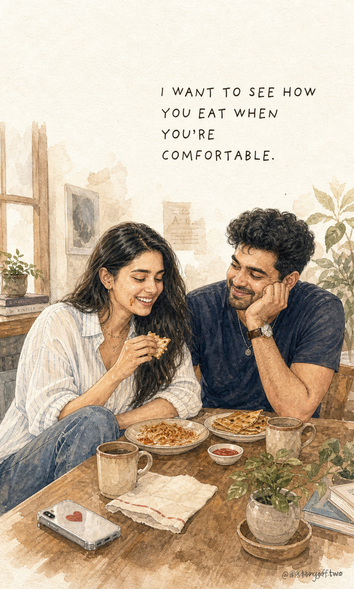
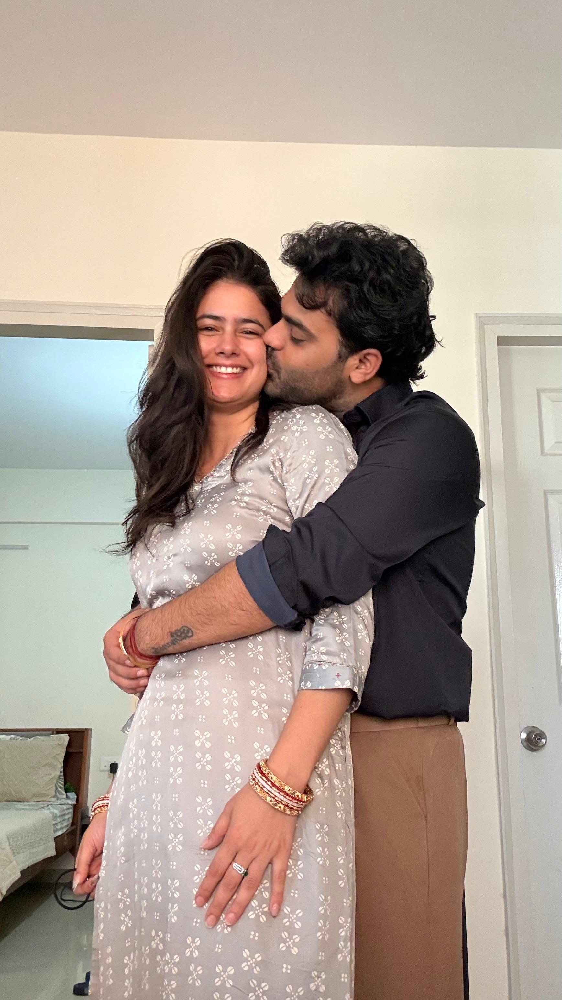
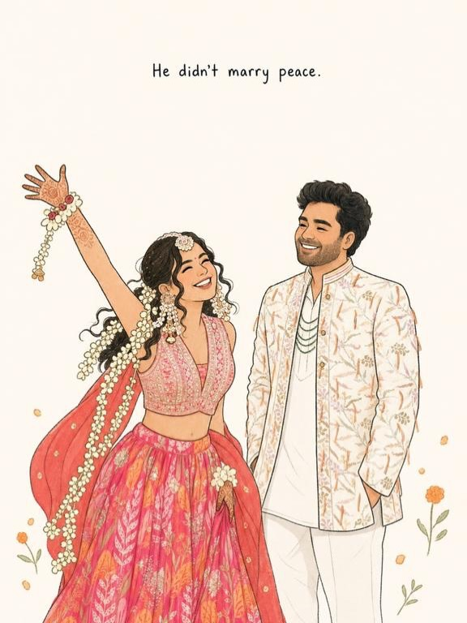
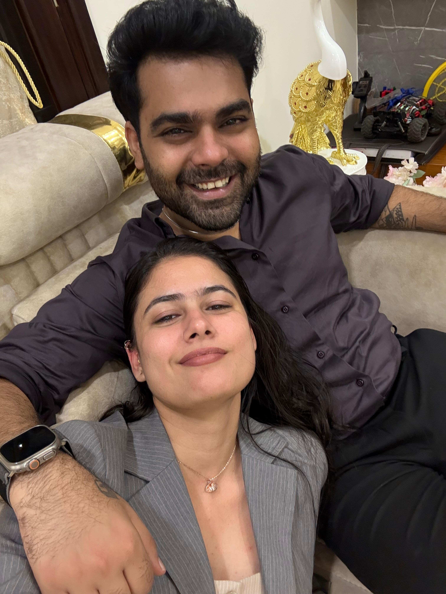
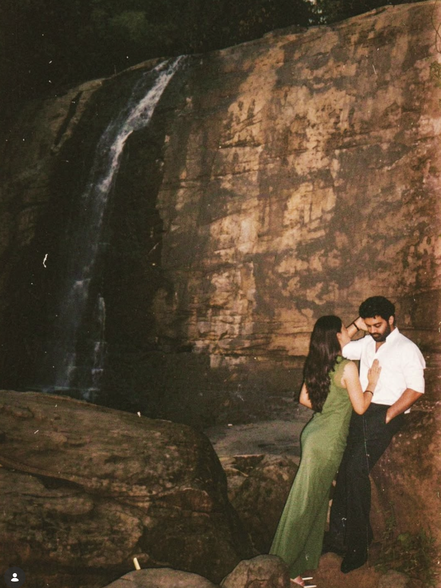
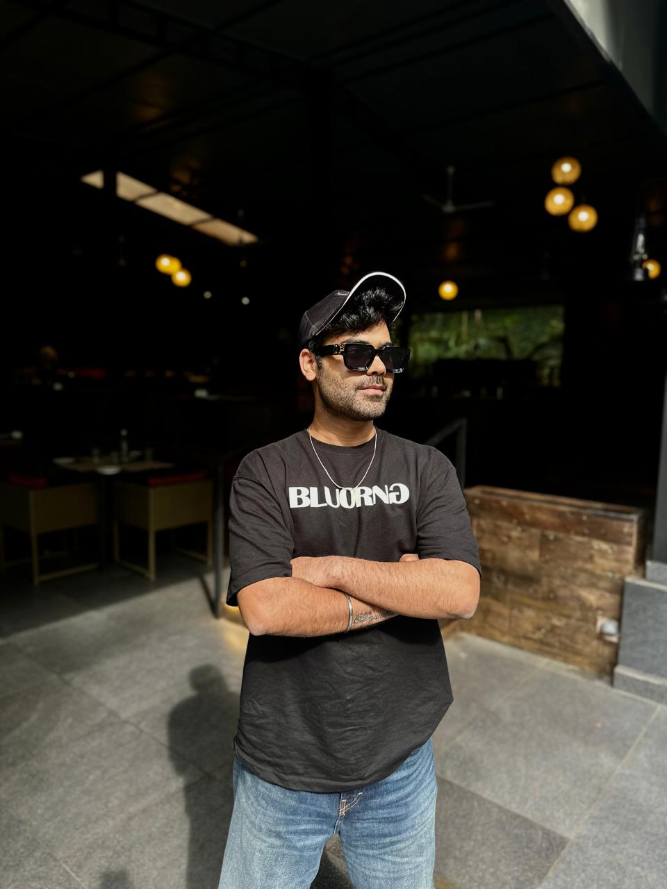

followers in the latest profile screenshot
digital archive of us
A paper world for the chaos, softness, and proof.
A full illustration-theme website for the same world we post every day: real Reels, warm carousels, travel notes, home scenes, Hinglish comedy, brand-fit data, and tiny relationship receipts.


Brand proof, but make it feel like the story.
Data should do the talking for partners without turning the page into a cold dashboard. The numbers sit on paper, next to the emotional formats that made them happen.
posts across Reels, carousels, and memories
views in the Apify-backed June analysis
another top Reel proving the format travels
Real Reels, not thumbnail pretending.
Instagram Reel embed blocks stay here because Reels should be watched as Reels. Photos can support the world, but the video lane uses real links and real embeds.
loops and dynamic flows
Creative room
The website shows the making system too: different agents, different model lanes, one final story. The loop never starts with polish. It starts with a real couple behavior and ends only when the scene feels like us.
Story model
active lane
Three ways we tell it
Different formats. Same two people. Same emotional receipt.
Reels that travel
Quick, real, relatable moments: jaldi, nakhre, leaving and coming back, the tiny household dramas that reach millions.
Watch real embedsCarousels that stay
Paper scenes, exact copy, relationship receipts, and identity-safe illustrations when the story needs stillness.

Posts that become memory
Travel, food, home, outfits, and ordinary photos that become a warm archive of the life around the jokes.
places we go, moments we keep
The photo archive still matters.
The website should not turn everything into illustration. Some memories need to stay as they happened: the balcony, the food table, the road trip, the waterfall, the sleepy home frame, the face after the joke lands.



Recurring motifs sprawled around the world.
Aachu/Zuv should not feel pasted into a layout. The world should carry their objects: scarf, cup, door, car, pizza, mountains, tiny hearts, soft navy buttons, and handwritten side notes.
jaldi
Nobody defines it. Everybody recognizes the delay.
main nahi bol rahi
The face says nothing. Every object in the room reports otherwise.
calm enough for chaos
Not peace. A person who can hold the storm without flattening it.
mission control
Passenger seat, travel plan, weather report, snack audit, all active.
for brands
Collabs should feel like they already lived here.
Homegrown, heartfelt, honest. A brand belongs when it enters a real ritual: food, travel, skin, home, gifting, comfort, or the joke this couple was already telling.
multiple Reels have crossed million-view behavior
Reels for discovery, carousels for memory, posts for archive
the product enters an existing couple moment
story, visual, continuity, and data checks before handoff
Brand proof works best here as a fit-check system, not a fake logo wall. The pitch is simple: if it can live inside a real Aachu/Zuv ritual, it can become content people remember.